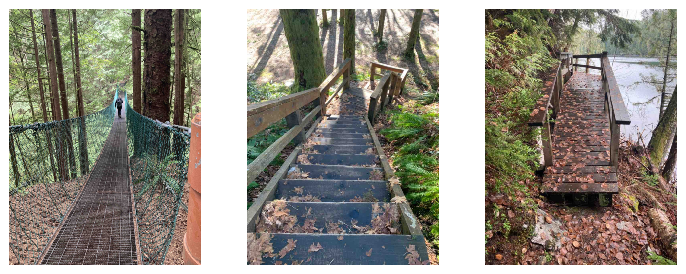
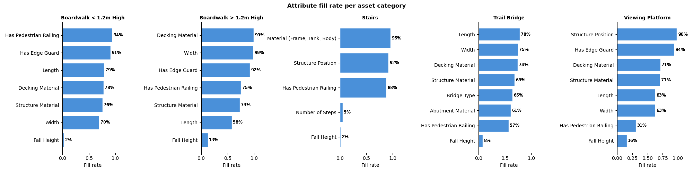
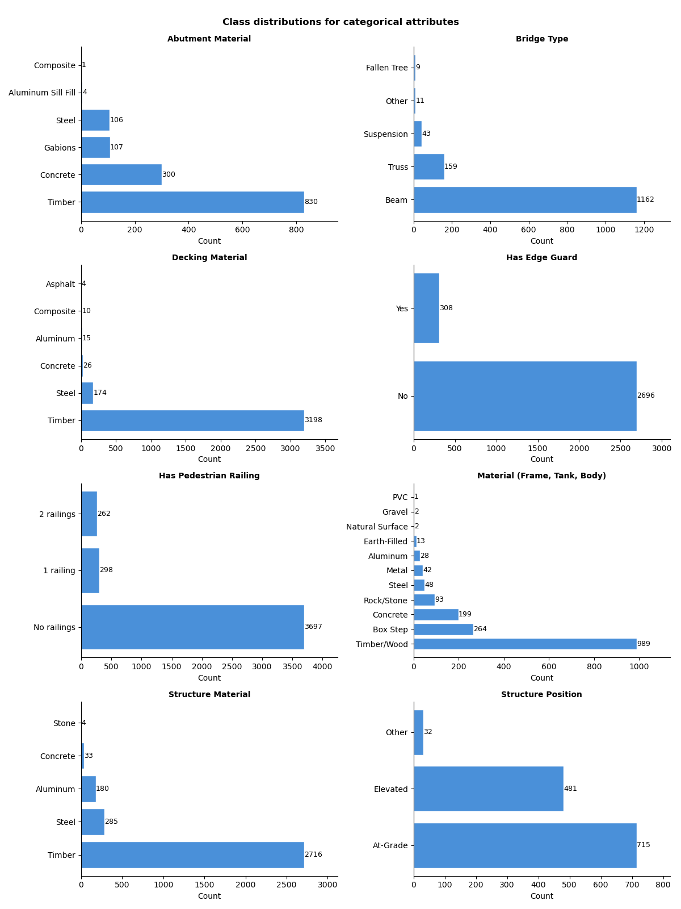
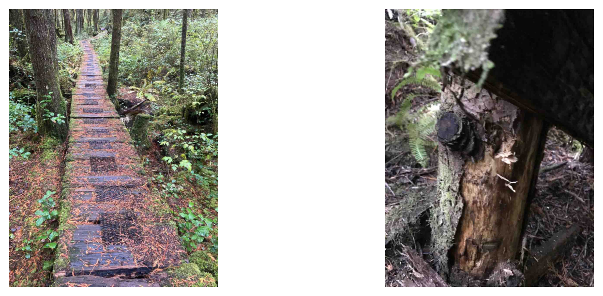

| Non-Null Count | Null Count | Data Type | Unique Values Count | |
|---|---|---|---|---|
| Column | ||||
| image_path | 5562 | 0 | object | 5562 |
| file_exists | 5562 | 0 | bool | 2 |
| asset_id | 5562 | 0 | int64 | 3584 |
| profile_id | 5562 | 0 | int64 | 5 |
| profile_name | 5562 | 0 | object | 5 |
| description | 5138 | 424 | object | 2709 |
| file_id | 5562 | 0 | int64 | 5562 |
| filename | 5562 | 0 | object | 5495 |
| attr_Abutment Material | 2094 | 3468 | object | 7 |
| attr_Bridge Type | 2054 | 3508 | object | 7 |
| attr_Decking Material | 4359 | 1203 | object | 7 |
| attr_Fall Height | 5499 | 63 | float64 | 36 |
| attr_Has Edge Guard | 3144 | 2418 | object | 3 |
| attr_Has Pedestrian Railing | 5439 | 123 | object | 7 |
| attr_Length | 5278 | 284 | object | 318 |
| attr_Material (Frame, Tank, Body) | 1958 | 3604 | object | 12 |
| attr_Number of Steps | 1090 | 4472 | float64 | 19 |
| attr_Structure Material | 4355 | 1207 | object | 6 |
| attr_Structure Position | 1321 | 4241 | object | 4 |
| attr_Width | 4156 | 1406 | object | 96 |
Project Report
Image Analysis of Park Infrastructure
- Date:
- 2026-05-05
- Prepared for:
- UBC Master of Data Science Capstone
- Prepared by:
-
Sarah Gauthier
Nour Shawky
Ssemakula Peter Wasswa
Mehmet Imga
Table of Contents
1 Executive Summary
BC Parks manages over 100,000 infrastructure assets, including stairs, trail bridges, boardwalks, and viewing platforms. Although many assets have associated photographs, important infrastructure attributes such as material,structural position and dimensions are often missing or incomplete. This limits the ability of staff to efficiently plan maintenance, prioritize inspections, and make reliable data-driven decisions.
We propose a staged modelling pipeline beginning with a zero-shot vision-language model baseline (Radford et al. 2021), followed by more targeted attribute-specific models for tasks such as material classification, structural feature detection, and size estimation. The final outcome will be a reproducible pipeline capable of generating structured attribute predictions with confidence scores to support BC Parks staff in reviewing and updating infrastructure records.
2 Introduction
BC Parks relies on infrastructure data to support maintenance planning, safety inspections, and long-term asset management. However, many infrastructure records currently contain incomplete attribute information, which makes it difficult for staff to prioritize maintenance inspections.
Our dataset includes 5,562 images associated with 3,584 unique assets, including stairs, trail bridges, boardwalks, and viewing platforms. As well as missing labels, initial exploration also showed many other data challenges including inconsistent formatting, multiple images linked to a single asset, and close-up photographs that may not provide useful contextual information.
Recent advances in computer vision and vision-language models, such as CLIP (Radford et al. 2021), have demonstrated strong performance in image understanding tasks. Building on these developments, this project aims to predict missing infrastructure attributes such as material type, structural features, and approximate dimensions from images. The final data product will be a reproducible machine learning pipeline that generates structured attribute predictions and confidence scores that can be integrated into BC Parks’ existing asset management workflows.
3 Data & Exploratory Data Analysis (EDA)
3.1 Data Sources
The data for this project was exported from the CityWide asset management system using an API key provided by the project partner. It includes two primary components:
- All image files attached to assets of type
Trail Bridge,Stairs,BoardwalkorViewing Platform. - A CSV file with attribute data for each image file.
The CSV file with attribute data contains 5,562 rows, where each row corresponds to a single image (attachment) linked to an asset through its Asset ID. As such, the observational unit of the dataset is an individual image–asset pair. Each record also includes metadata such as image path, asset category (profile_id), and a series of asset-level attributes (e.g., decking material, fall height, length).
In addition to the attribute table, the dataset includes 5,310 image files that were collected by field inspectors corresponding to the attachment records. Examples of these images are shown in Figure 1.

3.2 Data Exploration
3.2.1 Unique values and label consistency
To better understand the possible values of categorical attributes, unique values were extracted.
| Column | Unique Values | |
|---|---|---|
| 0 | attr_Abutment Material | Aluminum Sill Fill, Composite, Concrete, Gabions, Steel, TBD, Timber |
| 1 | attr_Bridge Type | Beam, Fallen Tree, Other, Suspension, TBD, TBD | Beam, Truss |
| 2 | attr_Decking Material | Aluminum, Asphalt, Composite, Concrete, Steel, TBD, Timber |
| 3 | attr_Has Edge Guard | No, TBD, Yes |
| 4 | attr_Has Pedestrian Railing | 1 railing, 2 railings, No, No railings, TBD, TBD | No railings, TBD | Yes |
| 5 | attr_Material (Frame, Tank, Body) | Aluminum, Box Step, Concrete, Earth-Filled, Gravel, Metal, Natural Surface, PVC, Rock/Stone, Steel, TBD, Timber/Wood |
| 6 | attr_Structure Material | Aluminum, Concrete, Steel, Stone, TBD, Timber |
| 7 | attr_Structure Position | At-Grade, Elevated, Other, TBD |
Table 2 reveals some data quality issues such as the presence of placeholder values like TBD to denote missing values, artificially reducing the null counts in Table 1.
3.2.2 Attribute completeness by asset category
To assess data coverage, attribute fill rates were computed for each asset category. Invalid values were removed before computing fill rates.

As shown in Figure 2, there is a lot of variation in completeness across attribute types. Numerical attributes such as Fall Height and Number of Steps are particularly sparse while some categorical or binary attributes like Decking Material or Has Edge Guard are more consistently filled.
3.2.3 Categorical attribute distributions

Figure 3 shows strong class imbalance across several categorical attributes. For example, for Decking Material and Structure Material, dominant classes such as Timber appear far more frequently than alternatives. This imbalance introduces bias risks if employing supervised learning, as models may over-predict majority classes and underperform on rare categories. As a result, evaluation metrics such as precision and recall will be more appropriate than overall accuracy.
3.2.4 Image quality
While having multiple images per asset improves coverage and may give us more opportunities to correctly predict attribute values, the quality among these images varies significantly. Some images are close-ups or poorly framed, and may not capture relevant structural information, as shown in Figure 4. This suggests that image filtering or weighting may be required during model training to reduce noise from low-quality samples.

4 Proposed Data Science Approach
Our approach is motivated directly by the findings from our exploratory data analysis above. Given the high degree of class imbalance seen in Figure 3, we will start by defining a majority class predictor as our simplest benchmark, which always predicts the most frequent class per attribute. This sets a minimum performance floor: any model that cannot outperform this baseline provides no added value in our pipeline. We’ll be relying on F1 score to get a true picture of our baseline performance.
As we have seen above in Table 2, attributes vary in data type. Categorical attributes will require a classification approach while numerical attributes like length and fall height are better treated as ordered categories due to the difficulty in estimating exact measurements from images without a size reference to work with. Our pipeline therefore routes each image to the relevant set of attribute predictions based on the asset type, which is provided by BCParks via an organized folder structure. See Figure 5.
Given that a large proportion of our attribute labels are missing or incomplete, our next step is to explore zero-shot approaches that require no labelled training data. We will first evaluate a zero-shot Vision Language Model (VLM), building directly on the partner’s existing work with VLMs for attribute labelling. Through careful prompt configuration and providing the model with all possible attribute labels, we can establish a strong benchmark without any fine-tuning. Other zero-shot models like CLIP will be used for performance comparison.
To improve VLM performance, we will also implement a few-shot approach where we provide a small subset of labelled images alongside the prompt, which can improve prediction quality without full training. A key advantage of this approach is its flexibility: the model can also be prompted to return “Cannot Determine” or “Requires Manual Review” when an image does not contain sufficient information, such as close-up or low-quality photos. However, the main challenge with these approaches is that performance depends heavily on prompt and description quality, and they may struggle with fine-grained visual details and recognizing rare attribute values.
Lastly, we will also explore more advanced methods that make use of our available labelled data as well as some external data that may help support training. This includes training lightweight classifiers on top of rich pre-trained embeddings, which work well even with small datasets and are particularly effective for material-based attributes.
All approaches will produce a CSV file with all attribute predictions alongside a confidence score, with low confidence predictions being flagged for manual review by BCParks.
flowchart TD
A["Image Folder per Asset Type"] --> B["Image FilteringYOLO or Model Prompt"]
B --> C["Attribute Prediction Zero-shot VLM / CLIP"]
C --> D["CSV OutputPredictions + Confidence Scores"]
C --> E["Advanced Approaches DINOv2 / RAG"]
E --> D
5 Evaluation & Success Criteria
For our evaluation plan, we will start comparing our approaches against our majority class predictor using an F1 score as the minimum benchmark. For attribute-specific evaluation, we will use macro-F1 for categorical fields, and both mean absolute error (MAE) and root mean squared error (RMSE) for numeric fields. MAE shows the average error size, while RMSE penalizes larger errors more heavily, together providing a more complete view of model performance. Our best models will then be evaluated on a held-out test set.
For BC Parks, success means the workflow can classify infrastructure photos into the correct asset type and fill key missing attributes, including material, length, structure position and number of steps, reducing manual effort required by field staff. The results should be exported as a simple CSV file containing attribute values and confidence scores, making it easy for staff to review. The pipeline is designed to support staff decision-making, not replace it.
The primary stakeholders are BC Parks staff, the UBC MDS capstone team, and future maintainers. They all require accurate data, reproducible methods, and clear documentation for future updates as more data becomes available.
6 Timeline
| Week | Focus | Key Deliverables |
|---|---|---|
| 1 | Data understanding & preliminary EDA | Completeness analysis, class distribution plots, preliminary EDA notebook, proposal presentation |
| 2 | Data cleaning & preprocessing | More EDA, extract data quality isssues, prepare cleaned master dataset + asset specific datasets, proposal report submitted |
| 3 | Baseline & zero shot models | Train/val/test splits, Majority class predictor, zero-shot VLM and CLIP evaluation, prompt refinement, few-shot VLM |
| 4-5 | Experimenting with Complex Approaches | Embedding (DINOv2) + classifier approach , asset-specific models |
| 6–8 | Model evaluation & Fine Tuning, Finalization of data product | Best model fine-tuning, Model evaluation and comparison, final evaluation on held-out test set, final report + data product, partner documentation and demo |
7 References
Radford, Alec, Jong Wook Kim, Chris Hallacy, Aditya Ramesh, Gabriel Goh, Sandhini Agarwal, Girish Sastry, et al. 2021. “Learning Transferable Visual Models from Natural Language Supervision.” In Proceedings of the 38th International Conference on Machine Learning, 8748–63. https://arxiv.org/abs/2103.00020.